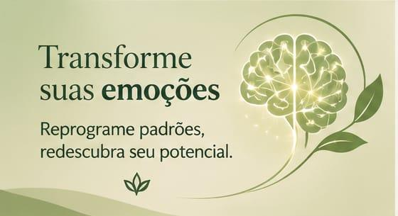

Aureci Sena
Um novo olhar sobre sua história.
Um caminho para a transformação.
Um espaço seguro, acolhedor e sem julgamentos para você se conhecer melhor, reprogramar padrões emocionais e construir uma vida com mais equilíbrio, leveza e significado.
Transforme
suas emoções
Reprograme padrões, redescubra seu potencial.
Por meio da Terapia de Reprocessamento Regenerativo, identificamos as raízes dos bloqueios e ressignificamos experiências para libertar sua verdadeira força.

Renasça a sua melhor versão
Aureci Sena
Terapia de Reprocessamento Regenerativo
Olá, sou Aureci Sena, terapeuta especializada em Terapia de Reprocessamento Regenerativo, com mais de 10 anos de dedicação ao cuidado da saúde emocional e mental.
Minha missão é proporcionar um ambiente seguro, acolhedor e livre de julgamentos, onde você possa se reconectar consigo mesmo. Por meio de abordagens terapêuticas comprovadas e integrativas, ajudo você a reprogramar padrões limitantes, superar ansiedades e construir uma vida com mais paz e significado.
-
Especialista em Reprocessamento RegenerativoMétodos integrativos focados em equilíbrio emocional e liberação de traumas
-
Cuidado Humanizado & EmpáticoAtendimento focado na pessoa como um todo: corpo, mente e alma
-
Sessões Online e PresenciaisAcesso seguro de onde você estiver, com o mesmo calor e qualidade humana
Meus valores e diferenciais
Minha prática é guiada por princípios que colocam você no centro do cuidado, com ética, carinho e respeito acima de tudo.
-
Acolhimento Genuíno
Um espaço caloroso e livre de julgamentos, onde você pode expressar sua dor e sua história com total liberdade.
-
Baseada em Resultados
Métodos regenerativos com foco prático no reprocessamento de traumas e retomada da sua vitalidade.
-
Sigilo Total
Absoluta confidencialidade em todas as sessões. Ética profissional e discrição garantidas do início ao fim.
-
Desenvolvimento Contínuo
Atualização constante com as melhores práticas da neurociência e abordagens terapêuticas integrativas.
-
Horários Flexíveis
Atendimento personalizado com horários que se adaptam à sua rotina, com conforto e pontualidade.
-
Experiência Comprovada
Centenas de histórias de superação e transformação guiadas com responsabilidade, respeito e eficácia.
Como posso te ajudar
Ofereço modalidades terapêuticas desenhadas sob medida para suas necessidades emocionais e pessoais.
-
Terapia Individual
Sessões personalizadas focadas no autoconhecimento, dissolução de crenças limitantes e construção de uma vida com plenitude.
Reprocessamento Regenerativo -
Ansiedade & Pânico
Tratamento especializado para crises de ansiedade, estresse severo e sintomas de pânico, restaurando o controle e a segurança interior.
Especialidade -
Terapia de Casal
Apoio para melhorar a comunicação, dissolver ressentimentos e fortalecer a cumplicidade e o afeto entre o casal.
Abordagem Sistêmica -
Burnout & Esgotamento
Recuperação do esgotamento emocional e físico gerado pelo trabalho, restabelecendo limites saudáveis e qualidade de vida.
Saúde Integral -
Desenvolvimento Pessoal
Para quem quer clarear suas metas, fortalecer a autoestima e alcançar seus sonhos com autoconfiança inabalável.
Evolução Contínua -
Atendimento Online
Sessões por videochamada onde quer que você esteja no Brasil ou no exterior, com todo o sigilo e segurança digital.
Disponibilidade Imediata
Histórias de transformação
Relatos reais de pacientes que encontraram novos caminhos e renasceram para uma vida plena. Nomes preservados por sigilo ético.
-
A Aureci Sena mudou completamente a minha vida. Cheguei ao consultório com ansiedade severa e crises de pânico semanais. Com o reprocessamento regenerativo, redescobri a paz e hoje vivo com confiança e alegria. Sou eternamente grata pelo seu carinho e dedicação!
M.R., 34 anos★★★★★ -
Eu e minha esposa estávamos prestes a nos divorciar. A sensibilidade da Aureci em nos escutar sem tomar lados e nos ensinar a comunicar nossos sentimentos salvou nosso casamento. Recomendo de olhos fechados a todos que buscam equilíbrio!
C.F., 42 anos★★★★★ -
Sofri um burnout devastador e não tinha forças para nada. A Aureci me acolheu com tanta generosidade e competência que, em poucos meses, reestruturei meus limites e aprendi a me priorizar. Renasci uma nova pessoa!
L.M., 29 anos★★★★★
Pronto para dar o primeiro passo?
Entre em contato direto pelo WhatsApp ou envie uma mensagem através do formulário ao lado. Será uma alegria caminhar ao seu lado nesse processo de cura.
-
WhatsApp(11) 99999-9999
-
E-mailcontato@aurecisena.com.br
-
AtendimentoSão Paulo, SP & Online para todo o Brasil
-
Instagram@aurecisena.terapia
Envie uma mensagem
Preencha os campos abaixo e responderei em até 24 horas úteis.